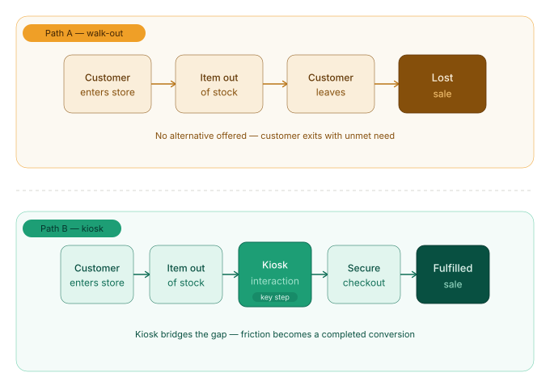
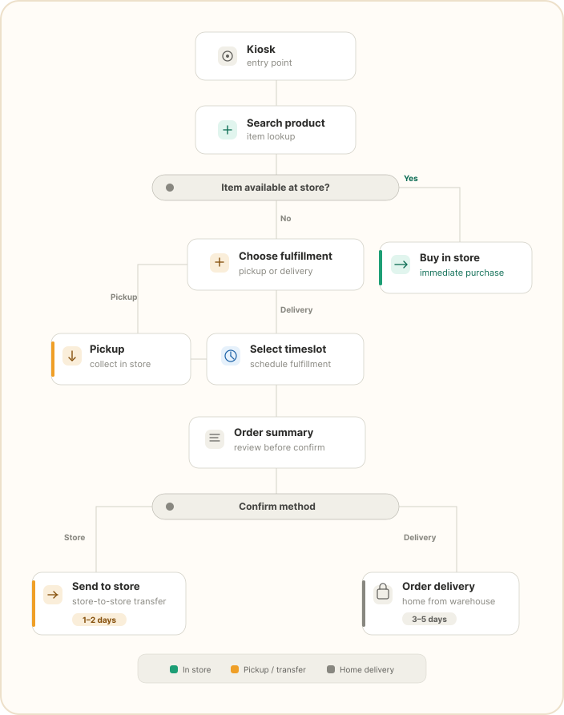
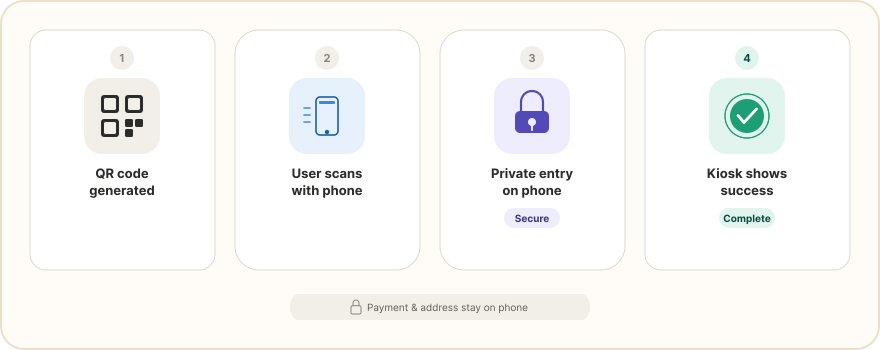
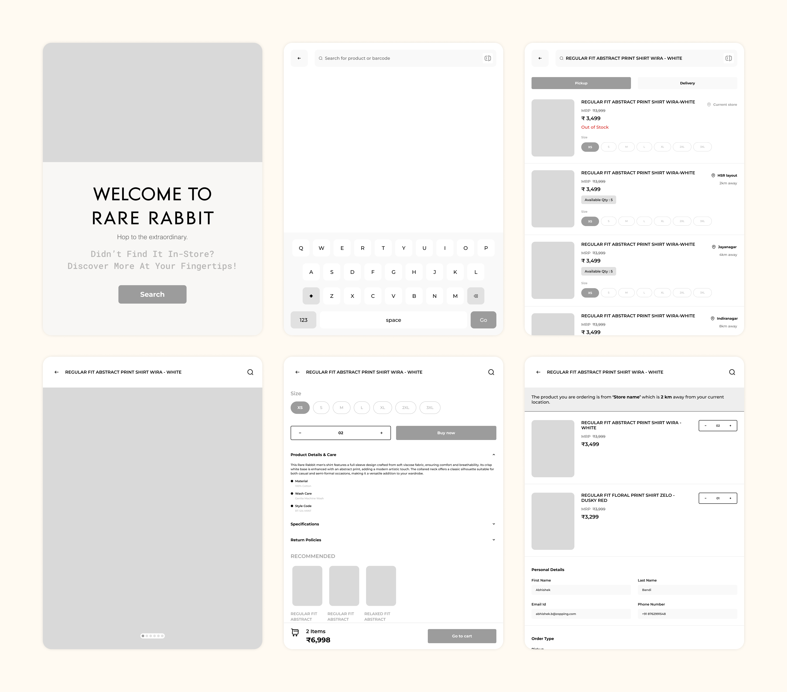
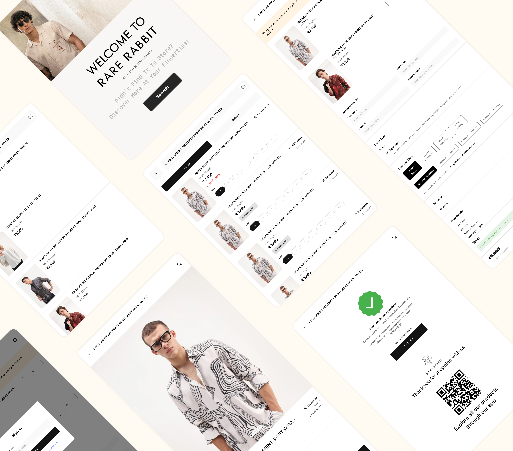

The Endless Aisle Kiosk
Turning out-of-stock frustrations into completed transactions — a self-service kiosk connecting physical shoppers to digital inventory.

Role
Product Design
Timeline
Dec 2025 – Feb 2026
Tools
Figma, Notion
Platform
In-store Kiosk / Touch Display
My Contribution
Roles & Responsibilities
I designed a scalable in-store kiosk solution to solve the "Out-of-Stock" problem in physical retail. The project focused on creating a seamless transition between a physical showroom and a digital warehouse, currently optimised for the fashion industry but built as a modular product for any retail sector.
Defining Success
Project Goals
15%-20%
Reduction in "walk-out" rates by capturing out-of-stock interest at the point of intent transforming potential lost sales into fulfilled omnichannel orders.
10%-20%
Increase in Average Order Value (AOV) through "Endless Aisle" cross-selling — surfacing related items across the full digital catalogue during a single kiosk session.
The Problem
Existing Problem
Physical stores face high "walk-out" rates when specific product variants — sizes or colours — are out of stock. There is often a disconnect between what is on the shelf and what is available in the central warehouse.
Design a touch-screen kiosk that serves as an "Infinite Aisle." It allows customers to browse the full digital catalogue, check real-time availability, and choose between immediate in-store pickup or home delivery — with a high-end, intuitive interface.
Empathize
Understanding friction between physical shopping and digital fulfilment
The goal of this phase was to understand where and why the physical shopping experience breaks down before any solution was considered.
- Store Observations: Identified that users often leave the store the moment they see their product variant (size or colour) is missing.
- Friction Points: Noted that typing long addresses or credit card details on a public screen is a major security concern for users.
- Staff Interaction: Found that store associates need a quick way to verify "Pick Up" orders without complex Flow.

Define
Categorising the data to identify primary fulfilment paths
In this phase, I defined why a kiosk is the right solution and categorised the research data to identify the two primary fulfilment paths.
Why a Kiosk?
- Unlike QR codes, which require a phone, a data connection, and a browser, the kiosk is "always on" and immediately inviting.
- Large screens allow for high-fidelity product viewing that a 6-inch phone screen cannot replicate.
- A physical touchpoint signals a formal service offered by the brand, increasing user trust for high-value transactions.
User Journey
- The "Pick Up" Path: For items in other nearby stores but not at the current location.
- The "Delivery" Path: For items available only at other branches or warehouses.

Ideate
Solving for kiosk-specific constraints
The Problem
- Kiosk Anxiety: Users are often overwhelmed by complex public interfaces.
- Input Fatigue: Typing on vertical screens is difficult compared to mobile or desktop.
- Privacy: Users need to feel their data is safe in a high-traffic environment.
The Goal
- Large Touch Targets: Using Fitts's Law to ensure all buttons are easy to hit.
- OTP / QR Integration: Moving sensitive data entry (like payments) to the user's private smartphone.
- Minimalist UI: High-contrast, clean layouts that reflect a premium experience.

Design
Wireframe, Design & Prototype
Step 01
Low-Fidelity Wireframing
Based on the finalised ideation phase, I developed low-fidelity wireframes to map out the user flow.
- Designed a seamless user journey by mapping the distinct "In-Store Pickup" and "Home Delivery" pathways into a logical sequence of interconnected screens.
- Placed essential product data (price, size, stock status) in the centre "hot zone" for immediate recognition.
- Defined the Bottom-Weighted Navigation layout to ensure all interactive elements remained within the physical reach of the user.

Step 02
High-Fidelity Design
Once the structural logic was validated, I turned wireframes into high-fidelity UI design to establish a premium retail aesthetic.
- Used a minimalist "Clean-White" and "Premium-Dark" palette so that product photography stands out as the primary focus.
- Implemented bold, high-readability fonts optimised for a 2-foot viewing distance, ensuring clarity in high-traffic environments.
- Optimised all primary action buttons with enlarged touch targets to reduce user frustration and accidental inputs during physical interaction.

Step 03
Interactive Prototyping
The final stage involved creating a functional prototype in Figma to simulate the real-world kiosk experience.
- Added smooth animations between screens to provide a natural, app-like feel that reduces "Kiosk Anxiety."
- Added instant visual responses to every touch, giving users clear confirmation of their actions and preventing accidental double-clicks.
Testing
Test & Evaluate
- Users successfully located out-of-stock items and scheduled deliveries within their preferred time slots with zero assistance.
- The bottom-weighted navigation made it easy for users to reach "Add to Cart" and other key actions, ensuring a comfortable experience.
Future Scope
Future Enhancements & Scalability
To further evolve the "Infinite Aisle" experience, I have identified key areas for system expansion:
- Develop a multi-fulfilment cart system where users can purchase items from different store locations or warehouses in a single transaction.
- Design a clear interface that splits the checkout summary by "Fulfilment Method," allowing users to manage different timelines without feeling overwhelmed.